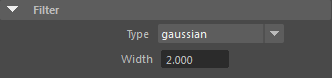
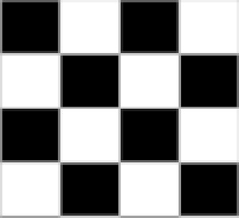
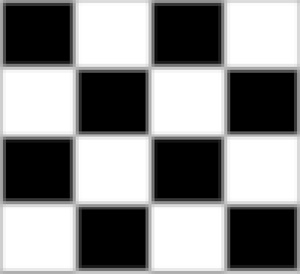
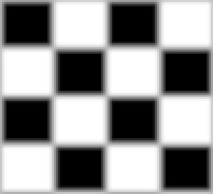
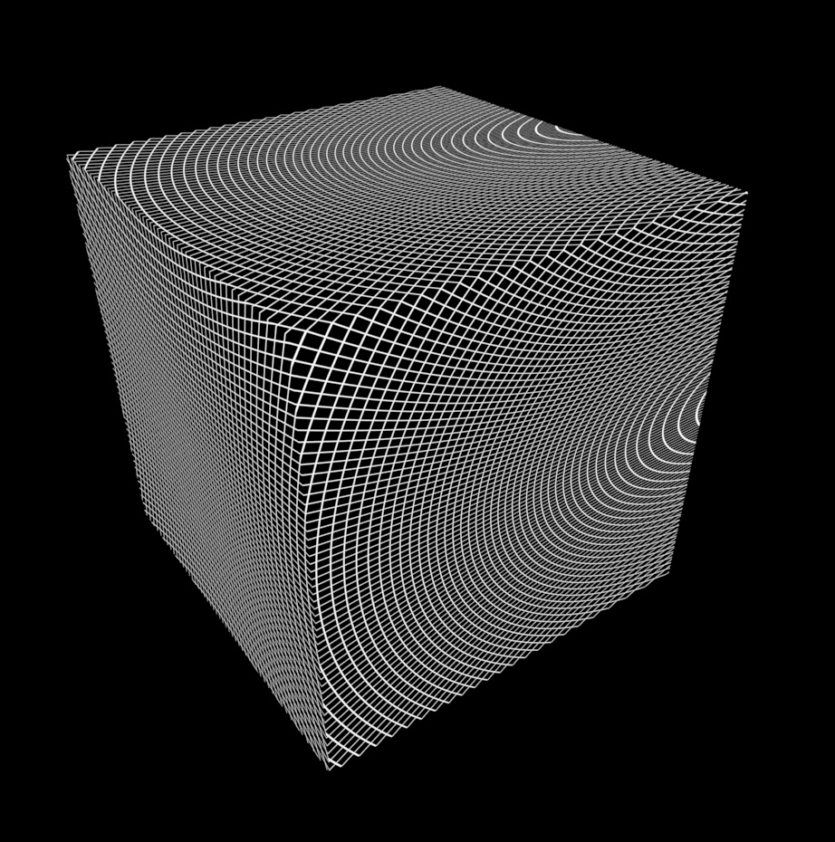
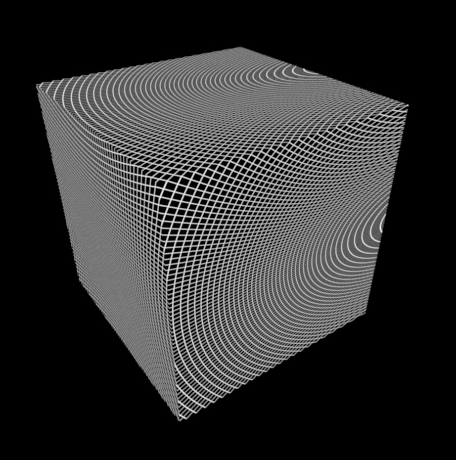
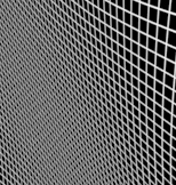
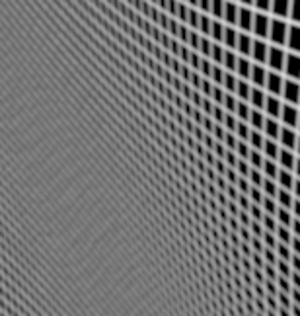

采样过滤
 请参见《Arnold 用户手册》中的渲染设置
请参见《Arnold 用户手册》中的渲染设置

过滤器类型
用于将各个子像素采样平均化到最终像素颜色的过滤器类型。其中大多数过滤器仅适用于传统用途。有关更多详细信息，请参见 Wikipedia。
我们建议使用高斯（宽度为 2.0）或 Blackman-Harris 过滤器。
选择像素过滤器全凭个人喜好。一些用户倾向于使用其中一种，但最终只是在模糊量方面稍有不同。越模糊就意味着锯齿越少，但代价是损失细节。
建议不要使用 _box_filter_（与禁用过滤一样）以及宽度过小的过滤器（实际上最终不执行过滤）。
请务必注意，所有渲染器都不会以相同的方式实现过滤器，即使它们具有相同的名称也是如此。Arnold 中所说的高斯可能与 Photoshop 高斯或 3Delight/PRMan/MentalRay 并不相同。理论的高斯图形的支撑集是无穷的，实际应用中要考虑到何处就将它截止的问题，而各厂家对此的实现不尽相同。因此，不要假定过滤知道如何逐字从一个渲染器传递到另一个渲染器。但是，Arnold 会尝试从 RenderMan 复制标准过滤器。
默认设置高斯 2.0 比其他过滤器略微模糊一些，但只要将其宽度从 2.0 减小到 1.8-1.9 就能增加清晰度。
catrom_filter 是几个具有负权重的过滤器之一，因此可能会在渲染到非区间限定浮点格式时带来麻烦。
选择的像素过滤器应该不会对渲染时间产生影响。能够对渲染时间造成细微影响的是过滤器宽度；如果宽度过大，则必须在过滤每个像素时考虑许多子像素采样。例如，与 2 个像素的高斯过滤器相比，Catrom 过滤器的硬编码宽度为 4 个像素，这可能会使渲染时间略有增加。
如果提高渲染的清晰度非常重要，则应确保 options.texture_max_sharpen 设置为 1.5。
其中大多数过滤器仅适用于传统用途。下面是完整的过滤器列表：
- Blackman-Harris
- 长方体
- Catmull-Room
- 高斯（默认）
- Mitchnell-Netravali
- 三角形
- 方差
- 轮廓
过滤器宽度
子像素采样平均化过滤器的宽度（以像素为单位）。对于圆形对称的过滤器，其宽度是过滤器支持的直径。
|  |  |  |
| 2 | 3 | 4 |
此示例展示了过滤器宽度对图像中的摩尔纹产生的影响。增加过滤器宽度设置有助于减少摩尔纹。
这在立方体的左侧和顶部更加明显。
|  |  |
| 2 | 4 |
|  |  |
| filter_width 为 2 时的特写 | filter_width 为 4 时的特写 |